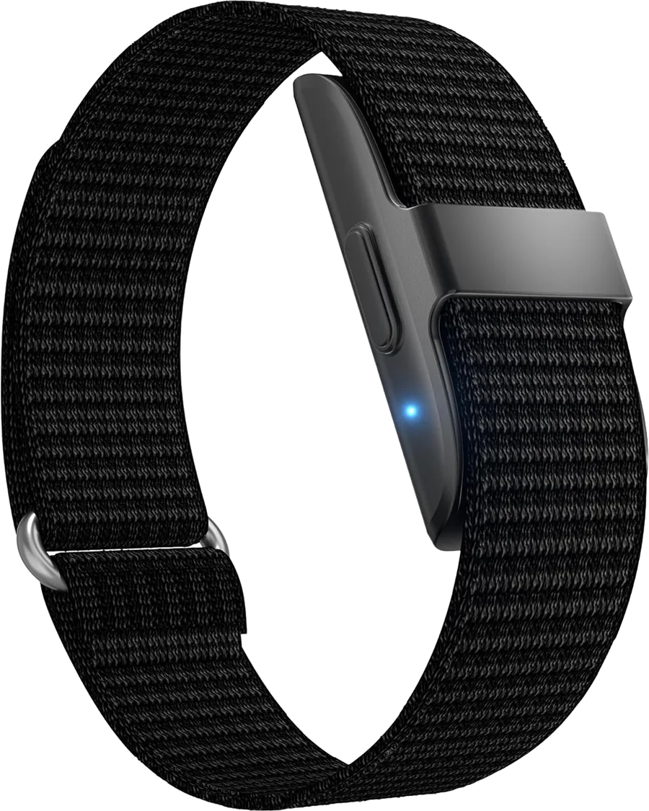
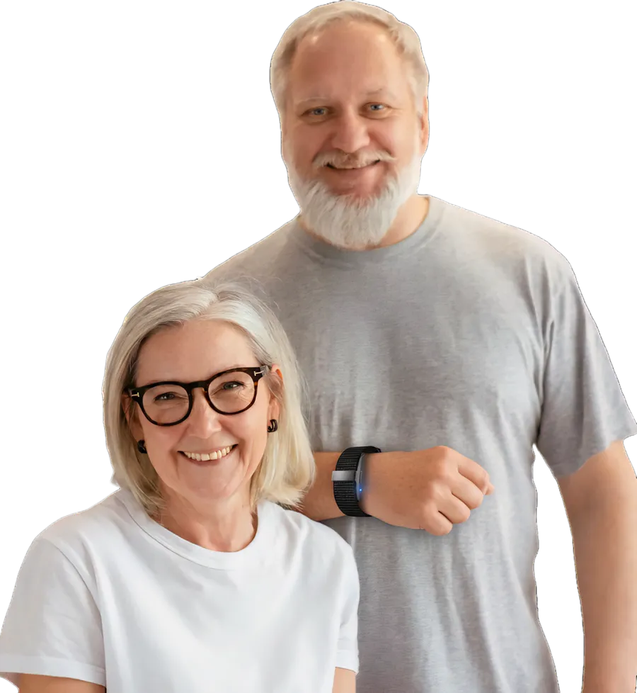

¿Estás bien? Antes de avisar a tu familia, AllinBand te pregunta a ti.
Es el concepto de una pulsera que vigila tus signos vitales. Responde y mira qué pasa.

- No respondiste en 10 segundos. Tiempo de ejemplo.
-
Aviso a Ana, tu primer contacto. Le mando tus datos y dónde estás.
- Pulso
- 124 lpm
- Oxígeno
- 91 %
- Temperatura
- 37,2 °C
Enviado. Ana todavía no confirma.
-
Última ubicación. Mapa de ejemplo. - Ana no confirmó a tiempo.
-
Paso al siguiente: aviso a Luis, tu segundo contacto.
Enviado. Luis confirmó.
-
Recibido. Voy para allá.
-
Luis respondió. Dejo de escalar y guardo lo ocurrido en tu historial.
Estoy bien.
Listo, no avisé a nadie. Tu familia no recibe nada y tú sigues con tu día.
Conversación de ejemplo: nombres, datos y tiempos son ficticios.
Tres pasos, sin que tengas que hacer nada
Mide
Sigue tu pulso, el oxígeno en tu sangre y tu temperatura durante el día, sin que aprietes nada.
Compara
Aprende cómo es un día normal para ti y nota cuando algo se sale de lo habitual.
Pregunta, y si hace falta, avisa
Vibra y suena para preguntarte si estás bien. Si no respondes, avisa a tus contactos en orden, con tus datos y tu ubicación.
Para que nadie tenga que llamar a cada rato
¿Cómo voy a saber si a mi mamá le pasa algo?
Te llega un aviso con sus signos vitales, qué fue lo raro y dónde está.
¿Y si estoy en una reunión y no lo veo?
Si no confirmas, paso al siguiente de la lista.
¿Y si solo subí las escaleras rápido? No quiero asustar a nadie.
Primero te pregunto a ti. Cancelas desde la pulsera y nadie se entera.

Tú eliges el orden. Hasta 5 personas.
- Ana, hija
- Luis, hijo
- Marta, vecina
La app, en tres pantallas
Mamá, ahora
- Pulso
- 72 lpm
- Oxígeno
- 97 %
- Temperatura
- 36,5 °C
Alerta activa
Pulso 124 lpm
Clínica a 600 m
Pulso en reposo
Últimos 7 días
Compartir con el médico
Pantallas de concepto con datos de ejemplo. La app no existe todavía.
Lo que busca el diseño, y lo que no puede hacer
Objetivos de diseño
Son metas del concepto, no resultados medidos.
- Batería
- 24 h por carga
- Aviso a contactos
- 5 s o menos
- Servicio disponible
- 99,5 % del tiempo
- Agua
- IPX7: lavarse, ducharse, lluvia
- Datos
- Cifrados al enviarse y guardarse
- Acceso a la app
- PIN o huella
- Celulares
- Android 10+ e iOS 14+
Límites que ya conocemos
- Mientras carga, unas 2 horas al día, no está en tu muñeca y no te vigila.
- Para avisar a tus contactos necesita tu celular cerca o una red WiFi configurada.
- No diagnostica ni reemplaza a un médico.
- En una emergencia evidente, llama tú a los servicios de emergencia.
Lo que la familia pregunta
¿Qué pasa si es una falsa alarma?
La pulsera te alerta primero con sonido y vibración. Tienes unos segundos para cancelar desde la misma pulsera, antes de que se avise a nadie.
¿Tengo que tener el celular siempre cerca?
Para medir, no: la pulsera guarda tus datos sola. Para avisar a tus contactos, sí: necesita tu celular por Bluetooth o una red WiFi configurada.
¿Cuánto dura la batería?
El objetivo es que dure hasta 24 horas y cargue en unas 2 horas, con un aviso cuando baje del 20 %. Mientras carga no te vigila, por eso conviene hacerlo en un momento tranquilo y acompañado.
¿Se puede mojar?
El diseño apunta a la norma IPX7, pensada para aguantar hasta 1 metro de agua durante 30 minutos. La idea es que puedas lavarte las manos, ducharte o salir con lluvia.
¿Cómo aprende de mí?
Durante las primeras semanas registraría tus valores normales. Con eso ajustaría a partir de qué punto preguntarte, para reducir las falsas alarmas.
¿Cuántos contactos puedo poner?
Hasta 5, en el orden que elijas. Si el primero no confirma a tiempo, la alerta pasa al siguiente de la lista.
¿Dónde la puedo comprar?
En ningún lado: AllinBand es un proyecto académico y no se vende. Esta página presenta la idea.
Un proyecto de la UPC
AllinBand es un concepto de Vivessence, desarrollado para el curso Arquitectura de Computadoras de la UPC en 2025.